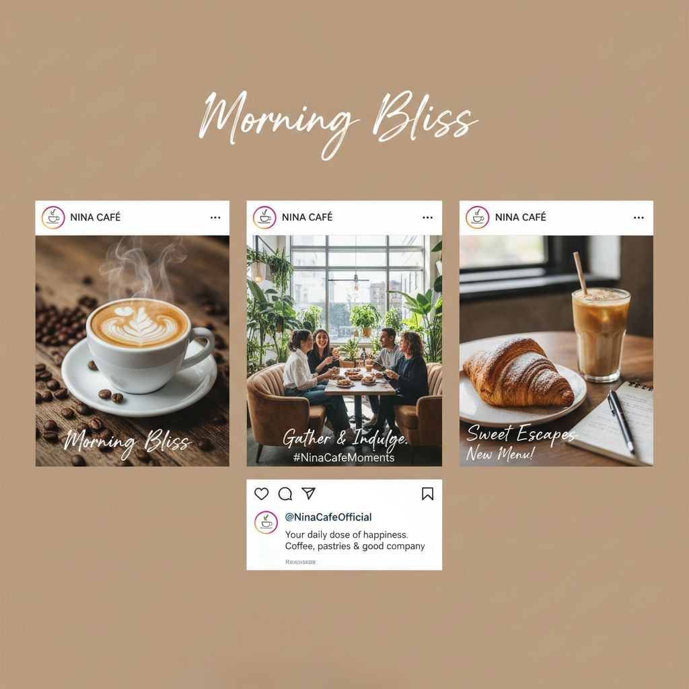

Portfolio
Explore my work across branding, social media, print, and more. Filter by category to find what you're looking for.

Branding for Startup Y
Logo / Branding
YouTube Thumbnails for Channel Z
YouTube
Event Flyer & Business Cards
Print Design
Promotional Web Banner
Banners
Instagram Stories for Retail Brand
Instagram
Complete Brand Identity Package
Logo / Branding
LinkedIn Graphics for Tech Co.
Social MediaCase Studies
Problem vs. solution — how thoughtful design drives real results.
Boosting Engagement: Social Media Campaign for Café X
Problem
Café X had low engagement on Instagram and inconsistent branding. They needed a cohesive set of posts to promote a new menu and attract younger customers.
Constraints
Design had to match their existing color scheme; tight 1-week deadline before the menu launch.
Approach
I researched the brand's colors and audience demographics. I created bright, appetizing post templates featuring menu items and developed a posting calendar with story templates to maintain consistency.


Results
+35% increase in likes and a 20% boost in comments after the new campaign launched. The client reported stronger brand recognition among local customers.
Modern Logo for Startup Y
Problem
Startup Y's old logo looked dated and didn't reflect their tech-forward brand. They needed a fresh identity that worked across digital and print applications.
Constraints
Logo must fit on app icon and letterhead; client preferred minimal design with no more than two colors.
Approach
I sketched logo concepts focusing on simplicity and scalability. After feedback rounds, I refined a monogram design using their brand colors and developed a style guide for consistency across all touchpoints.


Results
New logo received positive client feedback and enabled cohesive branding across website, app icon, and business materials.
Flyer & Business Card for Local Event
Problem
Local event organizers needed flyers and business cards to advertise a professional workshop. Previous materials lacked visual impact and clear information hierarchy.
Approach
Designed a bold flyer with clear information hierarchy — date, location, and speaker details prominently displayed. Created a matching business card template for organizers to distribute at networking events.


Results
Hundreds of flyers distributed across the city. The workshop reached full attendee capacity with organizers crediting the professional materials for increased sign-ups.
YouTube Thumbnails for Channel Z
Problem
Channel Z had low click-through rates on videos due to bland, inconsistent thumbnails. Viewers weren't clicking despite strong content.
Approach
Created bright, consistent thumbnail templates highlighting video content with large, readable text overlays. Established a color-coded system by content category for instant recognition.


Results
New thumbnails saw approximately +25% click-through rate improvement within the first month of implementation.
Promotional Banner for Product Launch
Problem
A retail client needed eye-catching web banners for a seasonal product launch. Previous banners blended into the page and failed to drive clicks.
Approach
Designed bold, high-contrast banners with clear CTAs and product photography. Created multiple size variations for website hero, sidebar, and social media ads.

Results
Banners drove a noticeable increase in landing page visits during the launch week. Client reused the design system for future campaigns.